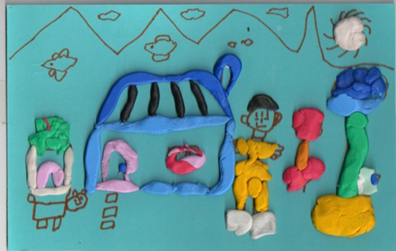

아이의 공격적, 충동적인 행동은 사회성 발달의 과정
아이들은 놀면서 친구와 갈등이 생기거나 의견 충돌이 발생하면 주변의 다른 아이를 건드리고 때리고 자기 마음대로 하려고 한다. 즉, 다른 아이의 장난감을 확 빼앗거나 울면 달려드러 밀쳐버리는 행동이다. 아이는 사소한 일로 화를 내기도 하고, 짜증을 유독 많이 내는 경우도 있다. 반면, 아무 이유 없이 다른 아이에게 상처를 입히는 경우, 집에서 받은 스트레스를 다른 아이들에게 푸는 경우도 있다. 하지만 점차 다른 사람의 기분을 이해할 수 있게 되면서 충동성을 억제하고, 공격적인 행동과 말을 자제하게 된다.

이것은 아이가 사회성을 발달시켜 가는 과정 속에 일어날 수 있는 극히 자연스런 현상이라고 볼 수 있다. 그러나 이러한 행동이 너무 과해서 별 이유없이 자신의 기분에 따라 거침없이 친구들을 때리는 아이는 기질적으로 활동적이고 충동적으로 공격적인 행동이 발달한다. 아이는 어릴수록 공격적인 행동을 좀 더 많이 하는 경향이 있으나 각 시기와 기질에 따라 부모의 적절한 지도와 감독이 있다면 큰문제로까지 발전되지 않는다.
아이의 공격성 발달 과정
아이의 공격성은 몸을 자기 마음대로 놀릴수 있는 돌 이후에 나타나기 시작한다. 자기 듯대로 되지 않으면 엄마를 때리거나 물건을 던지며 화를 드러낸다. 이때 대부분의 부모들은 아이가 아직 말을 못해서 그러러니 하고 넘어간다. 그러다 자기가 필요한 말은 다할 수 있는 4세가 넘어서 까지 뜻대로 안되면 무조건 공격성을 보이면 심각한 문제로 여긴다.
프로이트는 인간이 성적 충동(리비도, Libido)과 공격적 충동(Aggression)을 가지고 태어났다고 한다. 구강기에 젖을 빨아 느끼는 쾌감과 더불어, 깨물면서 쾌감이 더욱 추가된다. 이는 공격적 충동이 처음으로 나타난 것이다. 이후 동성 부모를 동일시하려는 과정을 통해 초자아가 발달하여 공격성을 자제하게 된다.
피아제는 어릴 때 결과에 의해서만 상황을 판단하다가 점차 의도, 동기를 고려한다. 어릴 때는 일부러 컵을 1개 깬 아이보다 실수로 여러 개를 깬 아이가 벌을 더 받아야 한다고 생각한다. 그렇게 규칙을 만든 사람들(부모, 선생님)은 전지전능하여 규칙을 어기면 처벌을 받는다고 생각한다. 이후 사회적 규칙은 바뀔 수 있다고 생각하는 융통성을 발달시킨다.
지도 방법
1) 때리기 전에 개입하기
잘 때리는 아이는 언제 아이를 때리게 될지 모르기 때문에 옆에서 잘 지켜 보도록 한다. 가까이 있다가 주변에 있는 아이를 때리는 상황이 발생할 것 같으면 때리기 전에 미리 개입하는 것이 좋다. 아이가 장난감을 뺏기 위해 다른 친구를 때리고 맞은 아이가 울면서 장난감을 뺏기면 때린 아이는 자기가 의도한 대로 장난감을 갖는 성취감 때문에 때리는 행동을 반복하게 된다는 점을 인식해야 한다.
2) 부모가 본을 보여 주기
부모가 아이를 때리는 것(체벌, 꾸중)은 크고 힘이 센사람은 자기 생각대로 하기 위해 남을 아프게 때려도 된다고 가르치는 것과 같다는 공격적인 행동을 배워간다. 아이에게 문제상황이 발생했을 때 타협해서 해결하지 않고 부모가 자신의 힘으로 제압하거나 일방적으로 이겨 버리면 아이는 힘의 논리를 배워 자기보다 약한 만만한 상대를 때리거나 괴롭히는 행동을 한다. 부모는 침착하게 자제력을 발휘하는 모범을 보여 주도록 한다.
3) 바람직하게 놀 때 칭찬하기
아이가 남들과 잘 어울려 노는 것과 같은 바람직한 사회적 행동을 하면 즉각적으로 칭찬을 해줘야 한다. “친구랑 다정하게 장난감을 나눠 가지고 노는걸 보니까 기분이 좋구나” 하면서 아이가 잘할 때마다 칭찬해주며 스티커를 붙여 주도록 한다. 라는 말을 덧붙이면서... 처음에는 스티커를 어느 정도 모으면 보상으로 간단한 상을 주는 방법도 있다. 이후 아이는 부모가 어떤 행동을 자신을 좋아하는지 알게 되어 바람직한 사회적 행동이 증가될 수 있다.
4) 때리는 즉시 타임아웃 적용
누군가를 때렸으면 먼저 맞은 아이가 괜찮은지 확인하고, 때린 아이의 나이에 1~2분 가량을 곱한 시간을 의자에 앉아 있도록 한다. 타임아웃 장소(생각하는 의자)로 이동을 시켜 부드럽지만 단호한 목소리를 나타낸다. 그후에 다른 곳으로 가서 할 일들을 하되， 중간에 아이에게 눈길을 주거나 말을 걸지 않도록 주의한다. 이때 방문을 닫거나 방이 어두우면 무서움에 무엇을 반성해야 할지 알지 못할 수 있으니， 부모를 볼 수 있는 장소에 의자를 마련하는 것이 좋다. 정해진 타임아웃 시간이 지나면 아이에게 일어나도 된다고 말해준다. 주의할 점은 아이가 이미 자신이 타임아웃을 당한 이유를 알고 있으므로 그 어떤 훈계도 하지 않도록 한다.
5) 폭력적인 매체로부터 보호하기
아이들은 폭력적인 매체에 많이 노출 되어 있어서 티비나 게임 속 폭력적인 장면을 많이 보고 세상을 현실로 인식하게 되면 공격적인 성향은 훨씬 심해질 수 있다. 폭력적인 매체에 많이 노출 될수록 아이가 폭력적인 행동을 할 가능성이 높다. 그러므로 부모는 아이가 폭력적인 매체에 노출되는 시간을 줄여 주고 조정해 주어야 한다.
6) 부모양육 태도의 일관성
부모가 너무 엄하여 문제 상황이 발생했을 때 체벌로 다스리게 되면 아이 역시 또래와의 관계에서 문제해결 방법으로 공격적인 행동을 사용하게 되는 경우가 높다. 부모로부터 힘의 논리를 배웠기 때문에 집 밖에서 자기보다 약하거나 만만한 아이를 보면 공격적인 행동을 해서 분풀이를 하는 것이다. 부모가 과잉보호로 무엇이든 다 들어주는 식으로 일관성 없는 양육 하는 경우이다. 너무 많은 자유를 허용도 아이는 불안을 느끼므로 적절한 제한과 통제가 있는 자유를 주어지는 것이 가장 바람직한 환경이다.
이와 같이 공격성이 강한 아이는 모래놀이, 물건 두드리기, 종이 찢기, 풍선놀이 등을 통해 공격성을 마음껏 표출하고 발산하게 하는 것이 좋다. 놀이는 형태가 변하기 때문에 경쟁이 필요없다. 욕구불만이 있는 아이들에게 감정을 발산할 수 있도록 손에 쥐기 쉬운 물건을 들고 자연스럽게 놀이를 하면 격해진 기분이 전환이 될 것이다. 갈등이나 문제 상황에서 부모가 대화를 통해 타협하는 과정을 아이가 경험할 수 있도록 한다. 이런 시간을 통해 아이는 자신과 다른 의견이나 생각을 가진 친구를 수용할 수 있게 되고, 대화로 타협할 수 있다. 중요한 것은 부모가 아이와 특별한 시간을 가져 관계를 긍정적으로 만들어 가면서 칭찬과 배려의 마음으로 사랑을 나누게 될 것이다.
아이가 자신의 감정을 분노, 화 등 통제하기 어려운 상황
아이가 자신의 감정을 분노, 화 등 통제하기 어려운 상황 아이는 말로 자신의 의사를 제대로 표현하기가 어려운 시기이다. 조금만 화가 나도 막무가내로 울기, 물건을 집어던진다. 또한 바닥에
think-sis.co.kr